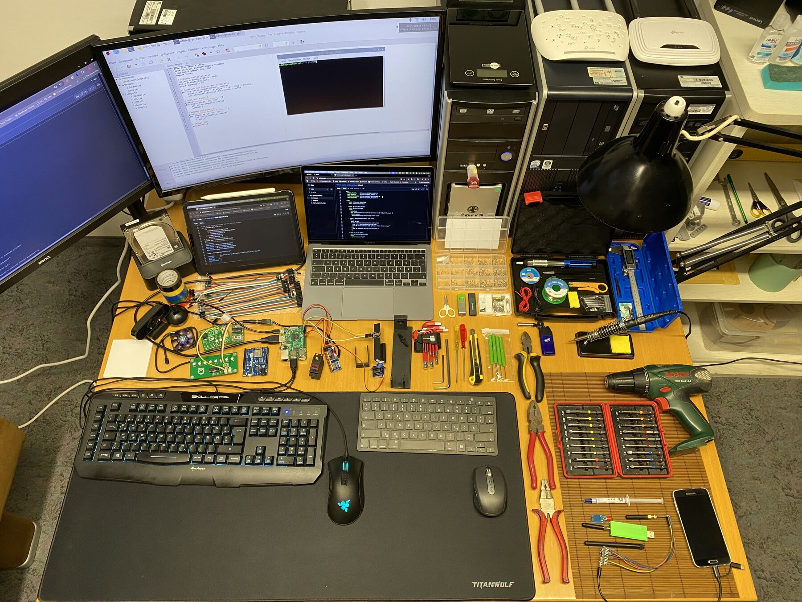

Angehender Raumfahrtingenieur
Lukas Karrer
Ich studiere Mechatronik an der TH Rosenheim und beginne 2027 meinen Master in Luft- und Raumfahrttechnik an der Universität Stuttgart. Neben dem Studium entwickle ich eigene Projekte – vom 60‑GHz-Radar-Tracking bis zur geschweißten Edelstahl-Rakete.
Neuestes Projekt · 2026
Radar trifft Kamera.
Ein 60‑GHz-Radar und eine Kamera finden eine Person im Raum. Ein Schwenk-Neige-Kopf folgt ihr und zeigt das Ergebnis mit einem Laserpunkt – Firmware, Tracking, Sensorfusion und Gehäuse komplett selbst gebaut.
Weitere Projekte.
Metallbau, Embedded-Elektronik, Software und Automatisierung. Wähle ein Projekt für Details und Fotos.
Die Werkstatt.
Hier entsteht alles auf dieser Seite: Konstruktion und Simulation am PC, danach Drucken, Löten und Testen am selben Tisch.
- Arbeitsplatz-PCCAD, Simulation, Firmware und Programmierung
- Elegoo Neptune 4FDM-Drucker für PLA und PETG, gesliced mit Orca Slicer
- Lötstationfür Module, Kabel und Reparaturen
- Raspberry Pi, Arduino, PSoC 6die Boards hinter den meisten Projekten

Als Nächstes
Eine selbst gebaute Solar-Inselanlage.
Klein anfangen mit Handys und Powerbanks, von Anfang an auf Wachstum ausgelegt – bis zum PC, zum Zimmer und irgendwann zum Haus. Das Monitoring läuft auf einem Raspberry Pi.
- SolarmodulSonnenlicht zu Gleichstrom
- MPPT-Ladereglerlädt den Akku sicher, vom Pi ausgelesen
- LiFePO4-Akkuspeichert die Energie des Tages
- Ausgängeheute USB-C, später 230 V
Über mich.
Ich will in die bemannte Raumfahrt. Die Mechatronik gibt mir die Grundlage dafür: Mechanik, Elektronik und Software in einem System.
Bei Jena-Optronik und am DLR habe ich erlebt, wie Raumfahrt-Hardware entsteht: konstruiert, getestet, dokumentiert. Genauso gehe ich meine eigenen Projekte an – mit Messreihen statt Bauchgefühl und mit Arbeitsprotokollen, in denen auch die Fehlwege stehen.
Die meisten meiner Projekte beginnen mit einer Frage, die mich nicht loslässt, und enden mit etwas, das auf meinem Tisch läuft. Ausgleich zur Werkbank finde ich beim Kraftsport, Laufen und Mixed Martial Arts.
- B.Eng. MechatronikTH Rosenheim
- Praktikum KonstruktionJena-Optronik, Jena · Konstruktion in Creo, Tests am LiDAR-System
- PraxissemesterDLR Institut für Weltraumforschung, Berlin · Planetare Sensorsysteme, Fabry-Pérot-Interferometer
- BachelorarbeitDLR Institut für Robotik und Mechatronik, Oberpfaffenhofen · Roboterarm des Lunar Rover Mini
- M.Sc. Luft- und RaumfahrttechnikUniversität Stuttgart
Lass uns reden.
Fragen zu einem Projekt, einem Praktikum oder einer Zusammenarbeit – schreib mir.